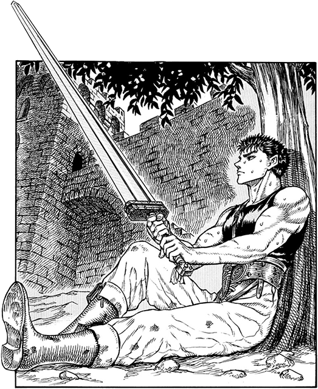
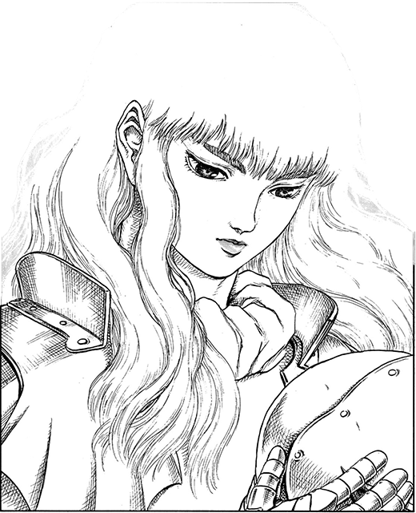

|  |
Guts (ガッツ)Guts, renowned as the "Black Swordsman", is a former mercenary and branded wanderer who travels the world in a constant internal struggle between pursuing his own ends and upholding his attachments to those dear to him. At one time driven solely by his will to survive, Guts finds purpose in life upon joining the Band of the Falcon, greatly helping in the faction's storied successes during the Hundred-Year War as captain of the band's raiders. He eventually becomes dissatisfied with clinging to Griffith's dream and departs from the band in pursuit of his own. From the Berserk Fandom Wiki |
Griffith (グリフィス)Griffith, is the charismatic leader and founder of the Band of The Hawk. Named after his helmet which was forged in the shape of a Hawk's head. Extraordinarily charismatic, intelligent, and handsome, his skill with his sabre and tactics gives him and his band the reputation of invincibility, making him the favored choice of the Midland King, who was locked in a century long war with the Empire of Chuder. From MyAnimeList |
 |

|
Casca (キャスカ)Casca was the only female member in the original Band of the Hawk and is behind only Griffith and Guts in swordsmanship. Her ambivalent relationship to both of them makes her moody and capricious. Casca joins the Hawks after Griffith empowers her to save herself from an assault by a nobleman who bought her from her parents, and since that time harbors feelings towards Griffith which most of their comrades are aware of. While Casca was against Guts joining the Hawks, her hostility towards him gradually waned as she came to accept him as a comrade for saving her life multiple times while developing feelings for him. From Wikipedia |